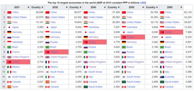
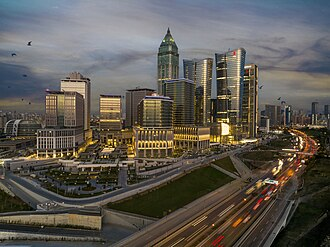
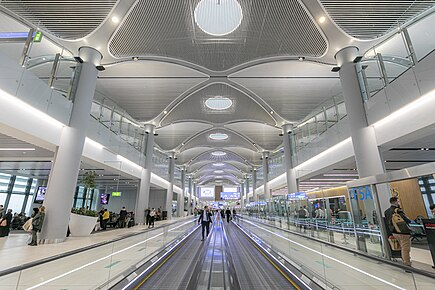

About Turkey's economy
Turkey is an upper-middle-income country and an emerging market.[323][350] A founding member of the OECD and G20, it is the 18th-largest economy in the world by nominal GDP, and the 11th-largest by PPP. It is classified among newly industrialized countries. Services account for the majority of GDP, whereas industry accounts for more than 30%.[351] Agriculture contributes about 7%.[351] According to IMF estimates, Turkey's GDP per capita by PPP is $42,064 in 2023, while its nominal GDP per capita is $12,849.[8] Foreign direct investment in Turkey peaked at $22.05 billion in 2007 and dropped to $13.09 billion in 2022.[352]
Turkey is a diversified economy; main industries include automobiles, electronics, textiles, construction, steel, mining, and food processing.[351] It is a major agricultural producer.[353] Turkey ranks 8th in crude steel production, 13th in ship building (by tonnage), and 13th in motor vehicle production in the world.[354] Turkish automative companies include TEMSA, Otokar, BMC and Togg. Togg is the first all-electric vehicle company of Turkey. Arçelik, Vestel, and Beko are major manufacturers of consumer electronics.[355] Arçelik is one of the largest producers of household goods in the world.[356] In 2022, Turkey ranked second in the world in terms of the number of international contractors in top 250 list.[357] It is also the fifth largest in the world in terms of textile exports.[358] Turkish Airlines is one of largest airlines in the world.
Between 2007 and 2021, the share of population below the PPP-$6.85 per day international poverty threshold declined from 20% to 7.6%.[323] In 2023, 13.9% of the population was below the national at-risk-of-poverty rate.[359] In 2021, 34% of the population were at risk of poverty or social exclusion, using Eurostat definition.[360] Unemployment in Turkey was 10.4% in 2022.[361] In 2021, it was estimated that 47% of total disposable income was received by the top 20% of income earners, while the lowest 20% received only 6%.[362]

Tourism accounts for about 8% of Turkey's GDP.[363] In 2022, Turkey ranked fourth in the world in terms of the number of international tourist arrivals with 50.5 million foreign tourists.[364] Turkey has 21 UNESCO World Heritage Sites and 84 World Heritage Sites in tentative list. Turkey is home to 519 Blue Flag beaches, third most in the world.[365] According to Euromonitor International report, Istanbul is the most visited city in the world, with more than 20.2 million foreign visitors in 2023.[366] Antalya has surpassed Paris and New York to become the fourth most visited city in the world, with more than 16.5 million foreign visitors.[366]
Infrastructure
Turkey is the 16th largest electricity producer in the world. Turkey's energy generation capacity increased significantly, with electricity generation from renewable sources tripling in the past decade.[367][368] It produced 43.8% of its electricity from such sources in 2019.[369] Turkey is also the fourth-largest producer of geothermal power in the world.[370] Turkey’s first nuclear power station, Akkuyu, will increase diversification of its energy mix.[371] When it comes to total final consumption, fossil fuels still play a large role, accounting for 73%.[372] A major reason of Turkey’s greenhouse gas emissions is the large proportion of coal in the energy system.[373] As of 2017, while the government had invested in low carbon energy transition, fossil fuels were still subsidized.[374] By 2053, Turkey aims to have net zero emissions.[375]
Turkey has made security of its energy supply a top priority, given its heavy reliance on gas and oil imports.[376] Turkey’s main energy supply sources are Russia, West Asia, and Central Asia.[377] Gas production began in 2023 in the recently-discovered Sakarya gas field. When fully operational, it will supply about 30% of the natural gas needed domestically.[378][379] Turkey aims to become a hub for regional energy transportation.[380] Several oil and gas pipelines span the country, including the Blue Stream, TurkStream, and Baku-Tbilisi-Ceyhan pipelines.[380]
As of 2023, Turkey has 3,726 kilometers of controlled-access highways and 29,373 kilometers of divided highways.[381] Multiple bridges and tunnels connect Asian and European sides of Turkey; the Çanakkale 1915 Bridge on the Dardanelles strait is the longest suspension bridge in the world.[382] Marmaray and Eurasia tunnels under the Bosporus connect both sides of Istanbul.[383] The Osman Gazi Bridge connects the northern and southern shores of the Gulf of İzmit.
Turkish State Railways operates both conventional and high speed trains, with the government expanding both.[384] High-speed rail lines include the Ankara-Istanbul, Ankara-Konya, and Ankara-Sivas routes.[385] Istanbul Metro is the largest subway network in the country with around 704 million annual ridership in 2019.[386] There are 115 airports as of 2024.[387] Istanbul Airport is one of the top 10 busiest airports in the world. Turkey aims to become a transportation hub.[388][389] It is part of various routes that connect Asia and Europe, including the Middle Corridor.[389] In 2024, Turkey, Iraq, UAE, and Qatar signed an agreement to link Iraqi port facilities to Turkey via road and rail connections.[390]
Science and technology
Turkey’s spending on research and development as a share of GDP has risen from 0.47% in 2000 to 1.40% in 2021.[391] Turkey ranks 16th in the world in terms of article output in scientific and technical journals, and 35th in Nature Index.[392][393] Turkish patent office ranks 21st worldwide in overall patent applications, and 3rd in industrial design applications. Vast majority of applicants to the Turkish patent office are Turkish residents. In all patent offices globally, Turkish residents rank 21st for overall patent applications.[394] In 2023, Turkey ranked 39th in the world and 4th among its upper-middle income group in the Global Innovation Index.[395] It was one of the countries with a notable increase in the past decade.[40]
TÜBİTAK is one of the main agencies for funding and carrying out research.[396][397] Turkey's space program plans to develop a national satellite launch system, and to improve capabilities in space exploration, astronomy, and satellite communication.[397] Under the Göktürk Program, Turkish Space Systems, Integration and Test Center was built.[398] Turkey's first communication satellite manufactured domestically, Türksat 6A, will be launched in 2024.[399] As part of a planned particle accelerator center, an electron accelerator called TARLA became operational in 2024.[400][401] An Antarctic research station is planned on Horseshoe Island.[402]
Turkey is considered a significant power in unmanned aerial vehicles.[403] Aselsan, Turkish Aerospace Industries, Roketsan, and Asfat are among the top 100 defense companies in the world.[404] Turkish defense companies spend a significant portion of their budgets for research and development.[405]